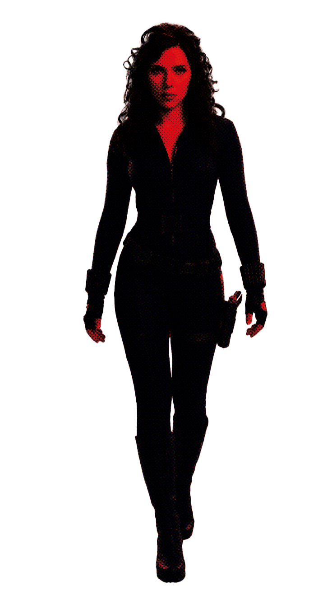

Natasha Romanoff es una espía rusa que posteriormente se convierte en agente de S.H.I.E.L.D. y miembro de los Vengadores. Es conocida por su inteligencia, capacidad de combate, discreción y habilidad para infiltrarse en organizaciones enemigas. Su identidad como Viuda Negra está relacionada con un programa secreto que convirtió a niñas y jóvenes en espías y asesinas altamente preparadas. Desde pequeña, Natasha fue sometida a un entrenamiento que buscaba convertirla en una herramienta al servicio de sus superiores

Era un programa secreto de entrenamiento soviético diseñado para formar mujeres espías y asesinas conocidas como Viudas Negras. En este lugar, las niñas eran sometidas a pruebas físicas y psicológicas, entrenamiento de combate y condicionamiento para obedecer órdenes. Su objetivo era eliminar cualquier debilidad y convertirlas en agentes letales.